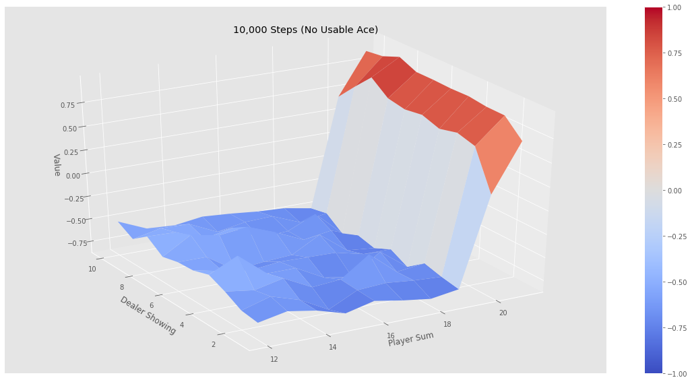
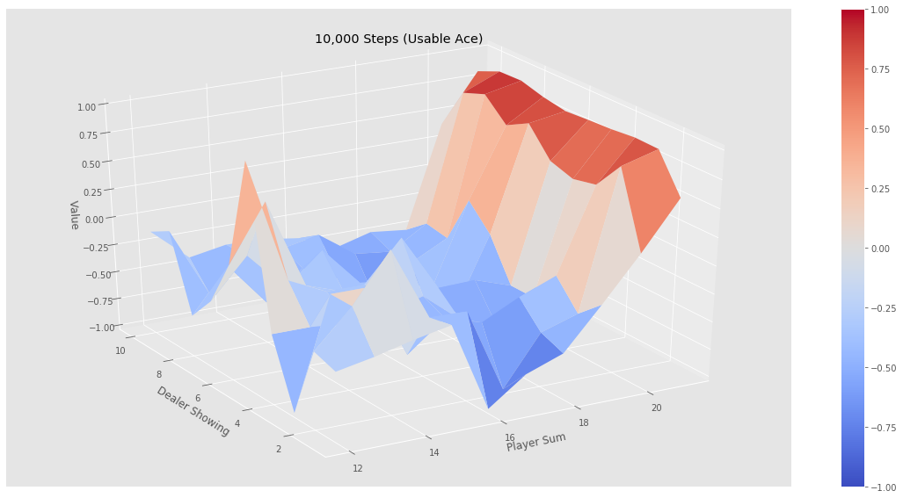
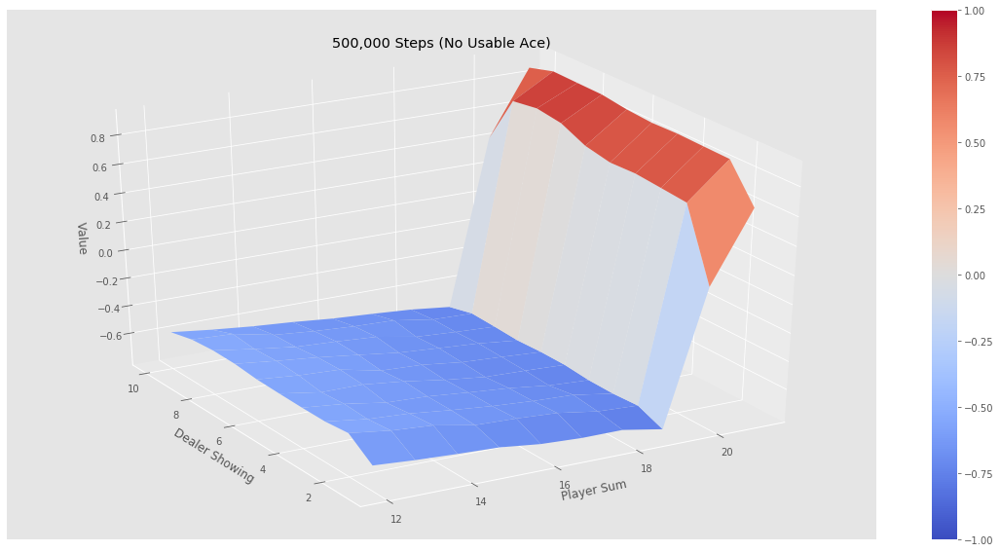
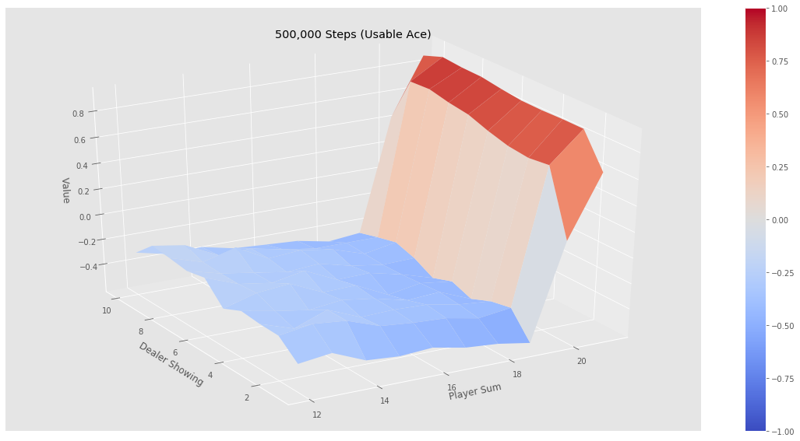

Unlike Dynamic Programming Methods, Monte Carlo Methods do not assume complete knowledge of the environment. MC only requires experience--sample sequences of states, actions, and rewards from actual or simulated interaction with an environment.
Monte Carlo Prediction
The idea underlies all Monte Carlo methods is that as more returns are observed the average should converge to the expected value. So we begin by considerng Monte Carlo methods for learning the state-value function for a given policy. A way to estimate the value of a state from experience is simply to average the returns observed after visits to that state. ## Play with Blackjack ENV 1
2
3
4
5
6
7
8
9
10
11
12
13
14
15
16
17
18
19
20
21
22
23
24
25env = BlackjackEnv()
# The observation is a 3-tuple of: the players current sum,
# the dealer's one showing card (1-10 where 1 is ace),
# and whether or not the player holds a usable ace (0 or 1).
def print_observation(observation):
score, dealer_score, usable_ace = observation
print("Player Score: {} (Usable Ace: {}), Dealer Score: {}".format(
score, usable_ace, dealer_score))
def strategy(observation):
score, dealer_score, usable_ace = observation
# Stick (action 0) if the score is > 20, hit (action 1) otherwise
return 0 if score >= 20 else 1
for i_episode in range(20):
observation = env.reset()
for t in range(100):
print_observation(observation)
action = strategy(observation)
print("Taking action: {}".format( ["Stick", "Hit"][action]))
observation, reward, done, _ = env.step(action)
if done:
print_observation(observation)
print("Game end. Reward: {}\n".format(float(reward)))
break
First-visit MC prediction algorithm
1 | def mc_prediction(policy, env, num_episodes, discount_factor=1.0): |



